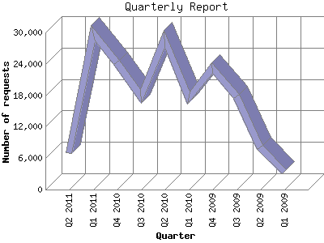

The Quarterly Report shows total activity on your site for each quarter of a
year. Remember that each page hit can result in several server requests as the
images for each page are loaded.
Note: Most likely, the first and
last quarters will not represent a complete quarter's worth of data, resulting
in lower hits.

| Quarter | Number of requests | Number of page requests | |
|---|---|---|---|
| 1. | Q1 2009 | 3,326 | 38 |
| 2. | Q2 2009 | 8,009 | 31 |
| 3. | Q3 2009 | 17,810 | 43 |
| 4. | Q4 2009 | 23,247 | 195 |
| 5. | Q1 2010 | 17,472 | 29 |
| 6. | Q2 2010 | 28,708 | 30 |
| 7. | Q3 2010 | 17,763 | 24 |
| 8. | Q4 2010 | 24,217 | 31 |
| 9. | Q1 2011 | 29,920 | 1,211 |
| 10. | Q2 2011 | 6,999 | 289 |
Most active quarter Q1 2011 : 1,211 pages sent. 29,920 requests handled.
Quarterly average: 192 pages sent. 17,747 requests handled.
This report was generated on April 23, 2011 21:02.
Report time frame January 4, 2009 02:40 to April 23, 2011 23:20.
| Web statistics report produced by: analog 5.1 / Report Magic 2.21 |